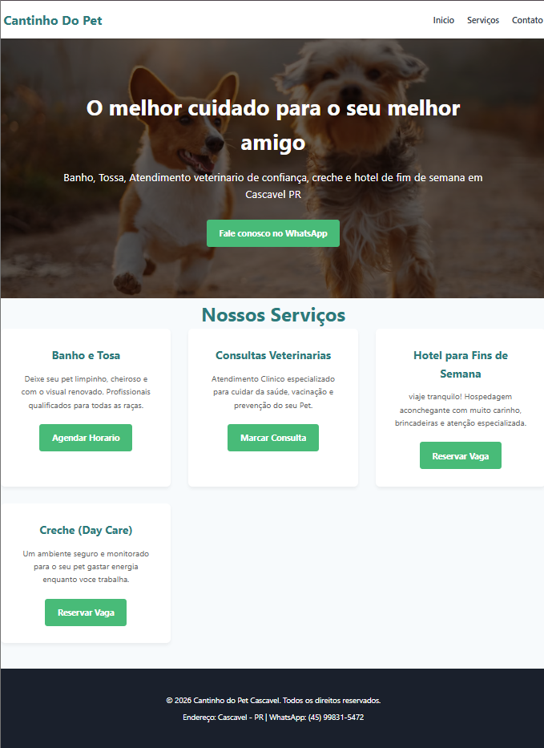
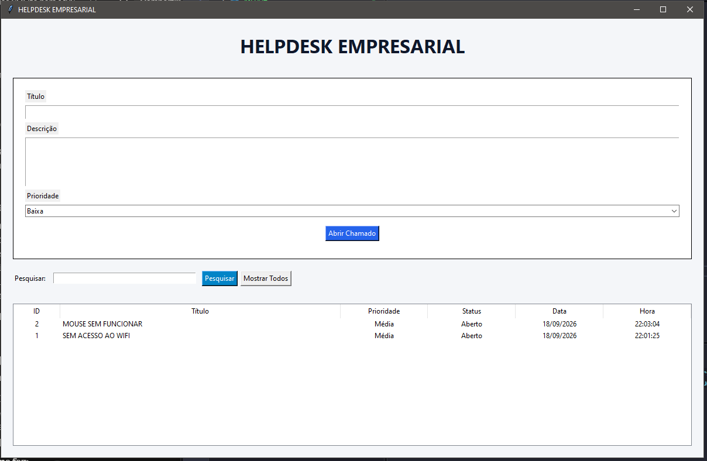
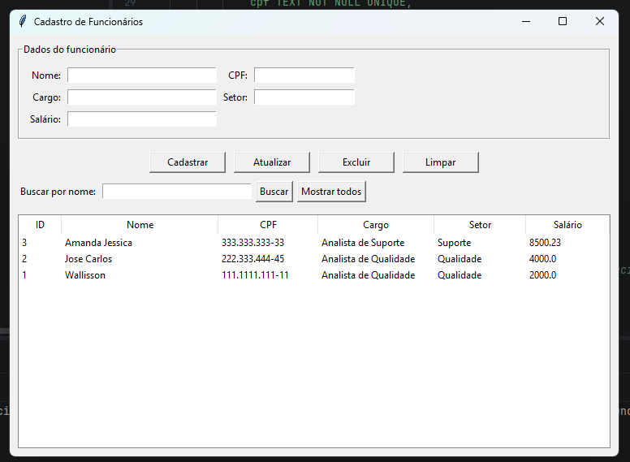

Desenvolvedor em formação, apaixonado por tecnologia e por transformar ideias em ferramentas digitais.
Olá, me chamo Wallisson Daniel, tenho 22 anos e sou de Cascavel, PR. Atuo na área de Qualide como Analista de Qualidade e estou cursando o curso superior de Análise e Desenvolvimento de Sistemas na Univel. Estou em transição de carreira para a área de tecnologia, trago comigo o conhecimento profissional adquirido em Qualidade e estou em busca da minha primeira oportunidade na área de Desenvolvimento.
Aqui estão algumas tecnologias com as quais tenho conhecimento:

Landing page informativa para um pet shop, desenvolvida para colocar em prática meus conhecimentos de HTML e CSS: estrutura semântica, layout responsivo e estilização de seções.
Tecnlogias: HTLM - CSS - GIT

Sistema de desktop de gerenciamento de chamados de suporte, desenvolvido em Python com interface grafica (Tkinter) e banco de dados MySql, Permite abrir chamados, pesquisar chamados ja abertos e resolver chamados.
Tecnlogias: Python - MySql - XAMPP - SQL

Sistema de desktop de gerenciamento de cadastro de funcionario, desenvolvido em Python com interface grafica (Tkinter) e banco de dados Sqlite3, Permite cadastra funcionario, atualizar cadastro e excluir o cadastro.
Tecnlogias: Python - Tkinter - GIT - SQLITE3
No momento, estou em busca de novas oportunidades como desenvolvedor júnior. Se você tem uma vaga ou uma pergunta, meu WhatsApp está logo abaixo!
Entrar em contato